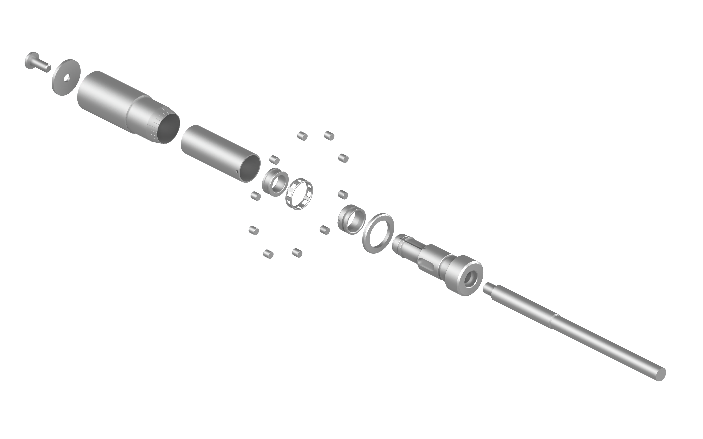
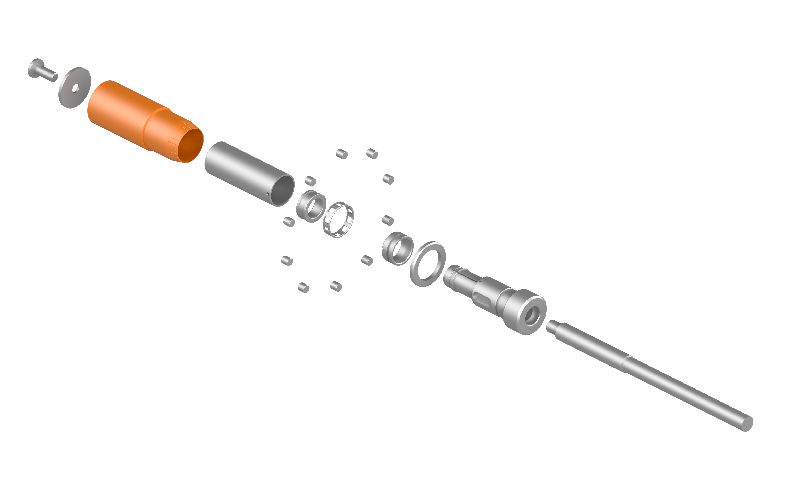
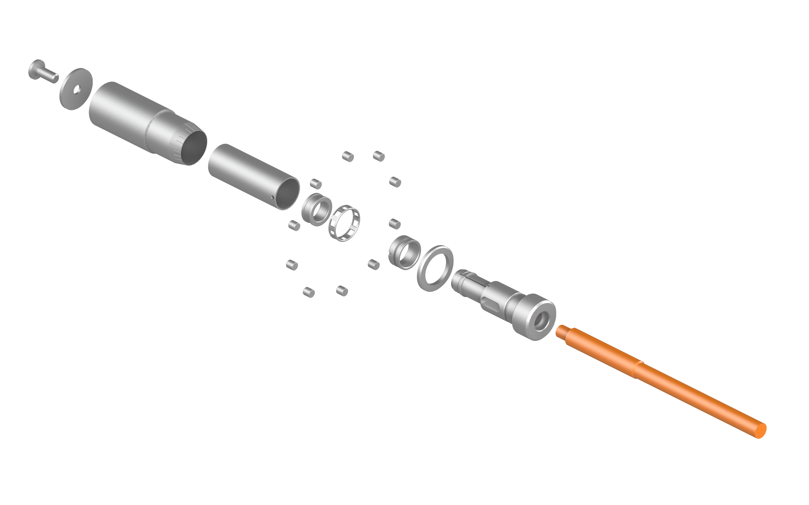
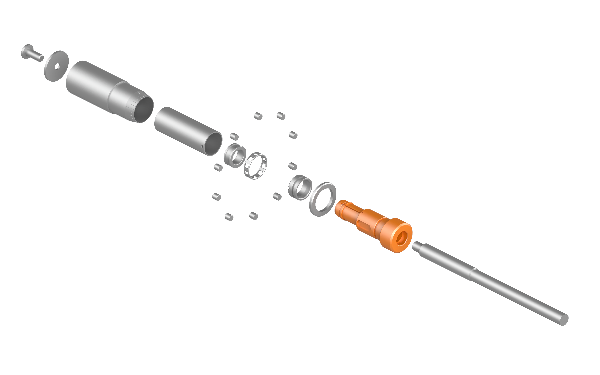
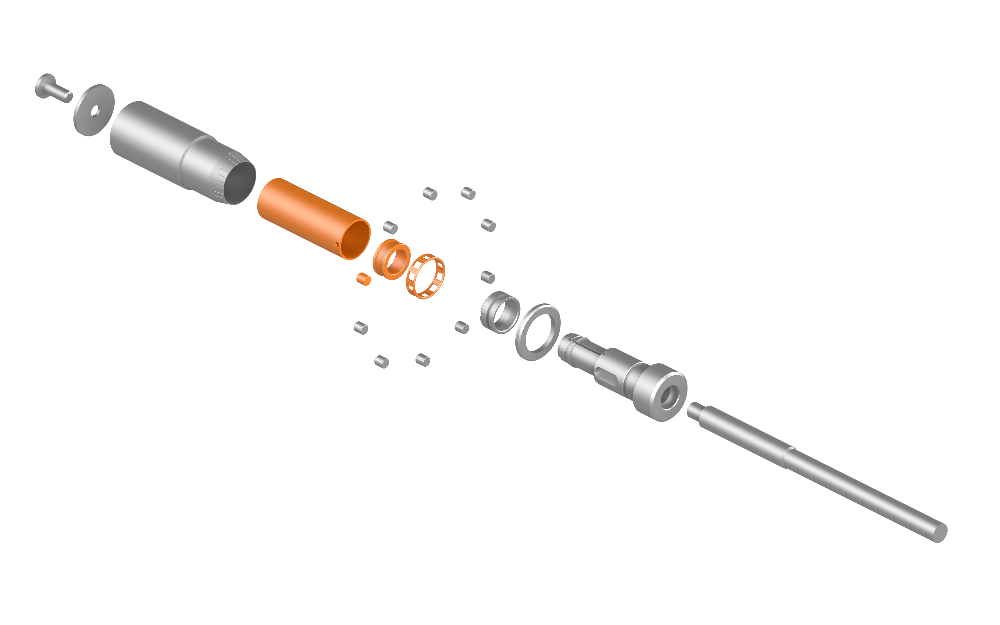
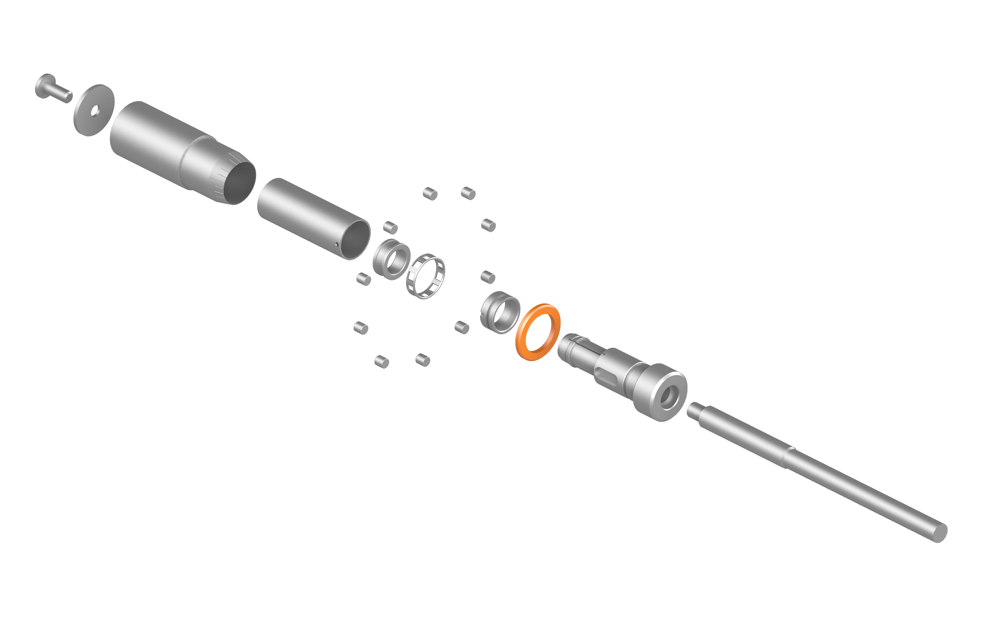

Brian Okum
Technical Writer
01
About
personal background
02
Portfolio
selected work
03
Resume
view / download PDF
04
Insights
articles & ideas
05
Contact
get in touch






01
ABOUT
personal background
02
PORTFOLIO
selected work
03
RESUME
view / download PDF
04
INSIGHTS
articles & ideas
05
CONTACT
get in touch
02.1
VISUAL COMMUNICATIONS
02.2
USER ENABLEMENT
02.3
QUALITY & COMPLIANCE
02.4
SINGLE-SOURCING
02.5
PROCESS DEVELOPMENT